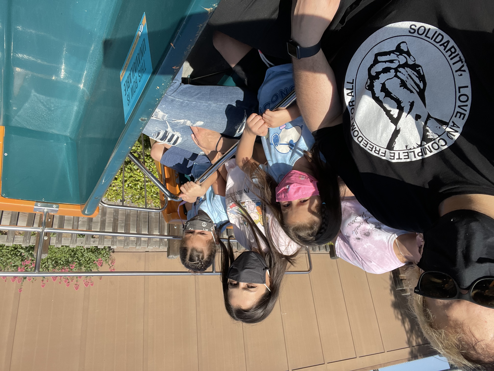

I am a 5th year PhD candidate and NSF/LANL/NOLP/ARCS Fellow at UC Irvine.
My research spans the intersection of astrophysics and particle physics.
My work focuses on binary black hole formation and merger rates, beyond the Standard Model particle phenomenology,
supernova dynamics from neutrino spectral analysis, and self-interacting dark matter effects on early galaxy evolution.
I am deeply committed to building community via active roles in the Physics and Community Excellence Program (PACE), SACNAS,
and the Physics Graduate Caucus (PGC) where I help foster mentorship, leadership, and inclusivity for students at all levels.
In my free time I enjoy weightlifting and spending time with my two daughters, whether catching waves at the beach, watching anime,
or cooking bomb vegan food.

My research spans binary black hole (BBH) formation and merger rates, beyond the Standard Model
(BSM) phenomenology, supernova neutrinos, and self-interacting dark matter (SIDM) effects on
early galaxy evolution.
Binary Black Hole Formation
In our recent work (arXiv:2412.13318),
we tackle the isolated evolutionary challenge of constructing the BBH population using first-principle galaxy formation models
and empirical relations. We demonstrate an inverse relationship between metallicity and the efficiency of forming BBHs
that merge within a Hubble time. Massive black holes predominantly originate in metal-deficient environments, such as dwarf galaxies.
Beyond the Standard Model Phenomenology
I explored constraints on new vector bosons coupled to the Standard Model, focusing on the \( U(1)_{B-L} \) gauge symmetry
(arXiv:2401.02483).
This symmetry naturally incorporates right-handed neutrinos (RHNs) to restore gauge invariance and provide a mechanism
for neutrino mass generation. I showed that anomaly-free models impose stringent constraints from rare decays (\( B \), \( K \), and \( Z \) bosons),
excluding parameter spaces where an MeV-scale RHN dark matter candidate explains both the \( (g-2)_\mu \) anomaly and the dark matter relic density.
Supernova Neutrino Spectral Analysis
As a UCI-LANL-SoCalHub fellow, I conduct a full-flavor spectral analysis of core-collapse supernova (CCSN) neutrinos
detected at SuperK, DUNE, and JUNO. Using 1D simulations with various equations of state and convolutional neural networks ,
I reconstruct neutrino spectra, surpassing traditional inversion methods. My work explores the total detected neutrino energy,
the core’s binding energy, progenitor masses, and shock revival likelihood, advancing our understanding of CCSN explosions.
Early Galaxy Formation with SIDM
Using the GIZMO code, I simulate early galaxy formation and evolution, comparing Cold Dark Matter,
Self-Interacting Dark Matter (SIDM), and Warm Dark Matter from redshift \( z \sim 20 \) to \( z \sim 8 \).
This work, motivated by James Webb Space Telescope observations, examines how SIDM impacts early structure formation
and helps distinguish between dark matter models.
I am committed to community building and outreach efforts, fostering inclusivity and mentorship in STEM.
As a leader with the Physics and Astronomy Community Excellence (PACE)
program, I have focused on horizontal mentoring for first-year graduate students, organizing monthly workshops to help
them acclimate to departmental culture and succeed in their programs. Through PACE’s involvement in the
National Osterbrock Leadership Program (NOLP), I organized and led a splinter session
at AAS #245, Deepening Broader Impacts: Mentorship, DEI, and Career Advancement, and co-authored the
NOLP whitepaper on
Reimagining the Astronomy PhD.
Previously, as the administrator of the
Physics Graduate Caucus (PGC), I led a diverse team to host social
events, graduate student town halls, and meetings with departmental leadership to drive actionable changes within the
department. As the outreach chair for SACNAS at UCI, I focus on
supporting transfer students, helping them navigate the transition to university and fostering interest in graduate school
through tailored programs and mentorship opportunities.

I am a father to two wonderful kiddos. I spend most of my free time hanging out with them,
usually hitting the pool or beach! I also enjoy weightlifting, reading manga or science fiction, and playing music..
Fun fact I used to play in crust punk bands before starting my degree!

To contact me, please email me at tylerbs@uci.edu.
Please reach out if you want to learn more about my current research, mentorship/outreach efforts, or chat about things beyond science.